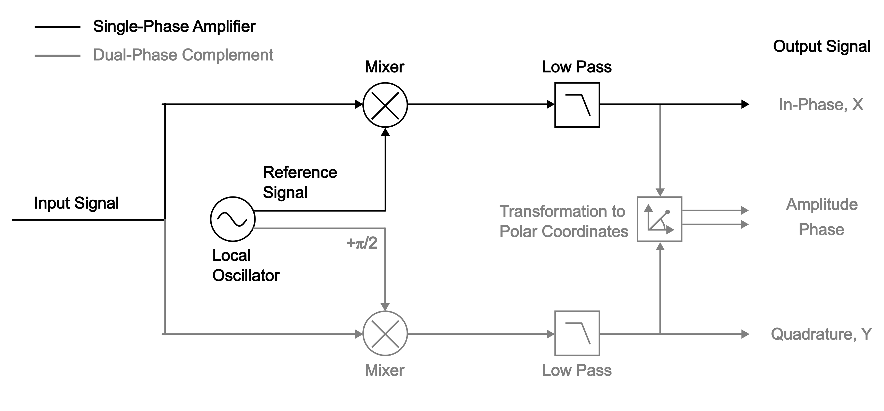
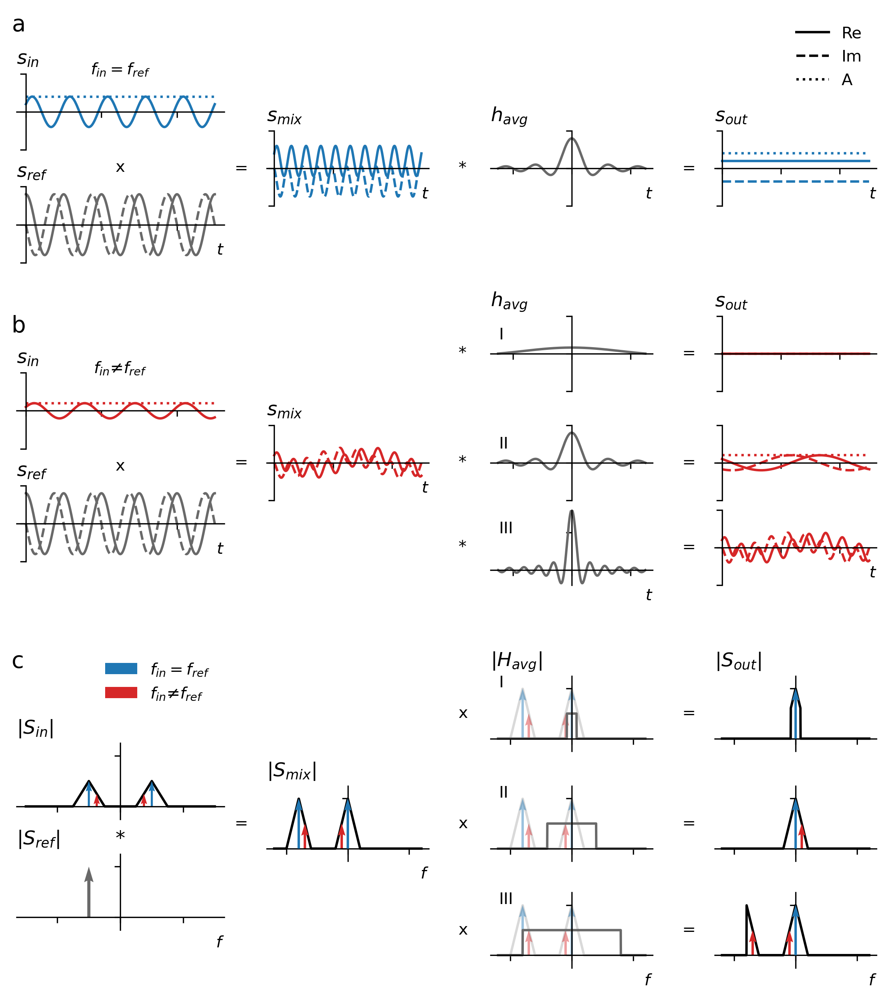
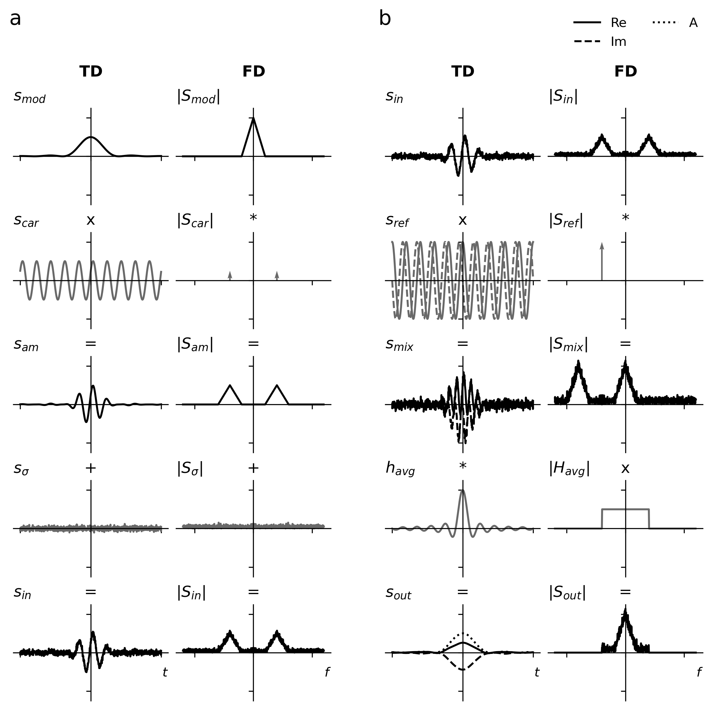
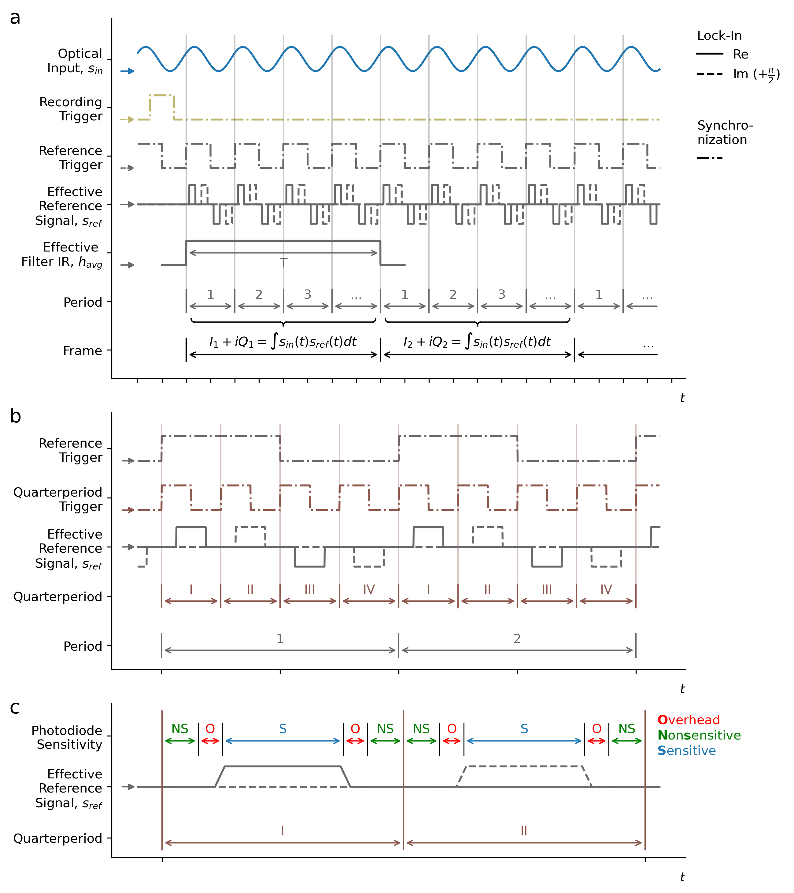
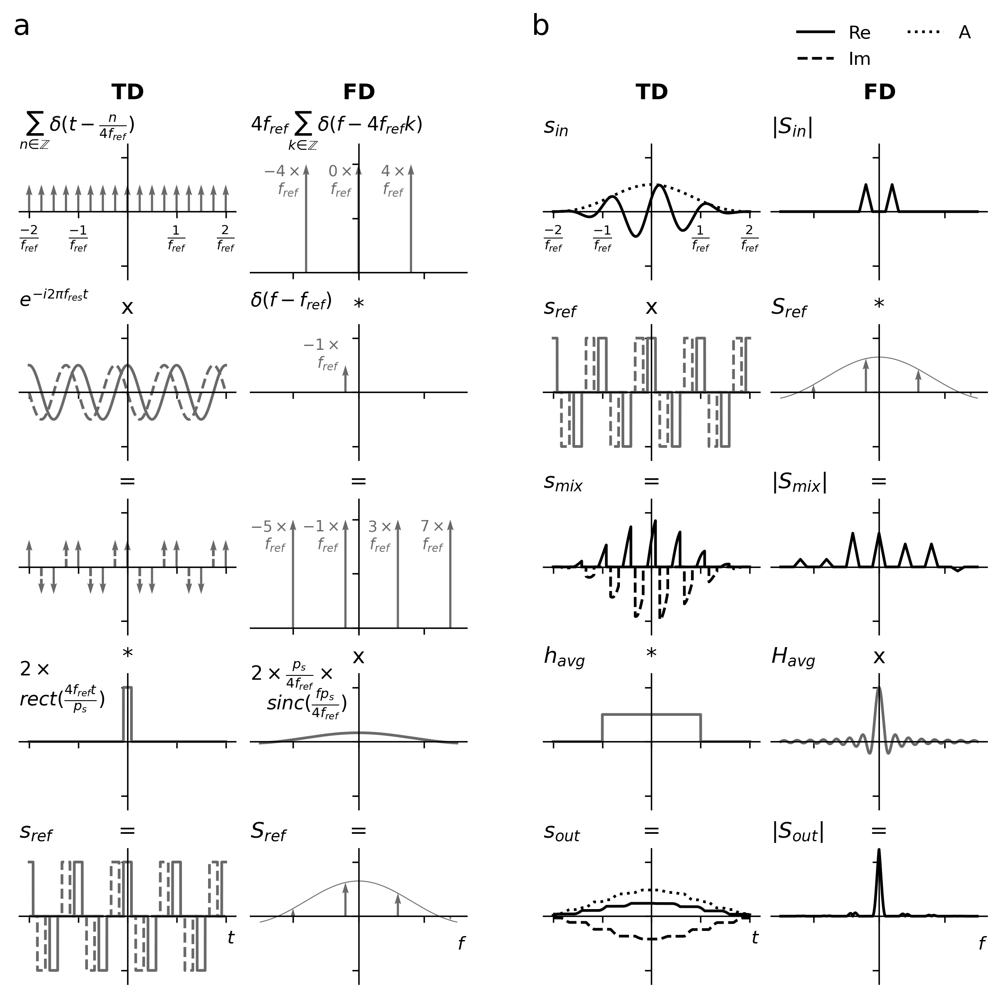
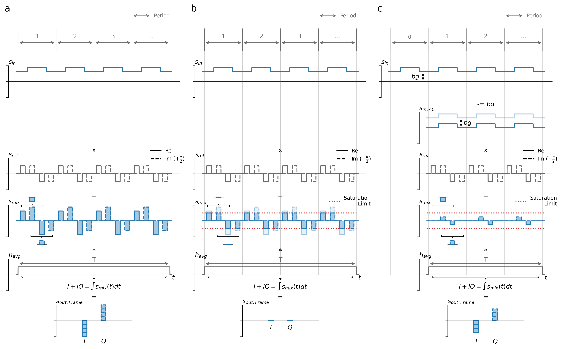

D) Advanced Concepts and Control
This chapter offers a detailed, mathematical, and mechanistic view of the measured signal, which enables the user to exploit the full potential of the heliCamTM C4 lock-in camera.
Lock-In Amplification
This first section aims to convey the basic theory behind lock-in amplification in depth to users with a technical background, who are not fully familiar with the subject. Later sections draw heavily on the picture presented here.
A lock-in amplifier exclusively extracts frequency components in a defined band around a tunable reference frequency from the input. Lock-in amplifiers can be used to isolate the information-bearing modulation amplitude from a known carrier wave in a process called demodulation. Due to their selectivity for specific frequencies, lock-in detectors are effective at suppressing background noise.
The implementation of lock-in amplification comprises two key steps:
First, the input signal is compared to a standard oscillation called reference signal by multiplication. This process is also called heterodyning - or homodyning if the reference oscillation has the same frequency as the input.
Then, the result is averaged in time.
Lock-in amplification is equivalently described in the frequency domain as (down-)mixing and subsequent low-pass filtering.
Single- and Dual-Phase
In their most basic form, so-called single-phase lock-in amplifiers also attenuate signal components that are out of phase with the reference signal even if they oscillate at the same frequency. Dual-phase or phase-sensitive lock-in amplification refers to a more advanced technique, which can detect both the amplitude of the input oscillation and its phase shift with respect to the reference signal. With this approach, used by the heliCamTM C4, the lock-in process is repeated once more with the reference signal shifted by \(\frac{\pi}{2}\) (see Fig. 27).
{kind=link}

Fig. 27 Block Diagram of Single- and Dual-phase Lock-In Amplification
Lock-in amplification selectively extracts frequency components around the reference frequency. To this end, the input is mixed with a reference signal provided by a local oscillator and subsequently low-pass filtered. Single-phase lock-in amplification (black part) not only suppresses signal components with frequency- but also with phase-mismatch relative to the reference signal. With a dual-phase lock-in design (grey part included), the amplification is repeated with a \(\frac{\pi}{2}\)- shifted copy of the reference signal. The two outputs components, “In-Phase” and “Quadrature” after their phase relation to the reference, are usually transformed to polar coordinates. In this manner, both the signal amplitude of the passing frequency components and their phase with respect to the local oscillator can be retrieved. In the literature on lock-in amplification, “In-Phase” and “Quadrature” components are often referred to as X and Y, respectively.
Most lock-in amplifiers use a sine wave as reference signal. It is a pulse wave in some instruments, however, including the heliCamTM C4. These lock-in amplifiers are also sensitive to odd harmonics of the fundamental reference frequency. For the sake of simplicity, we will first focus on ideal dual-phase demodulation with a perfect sine and its \(\frac{\pi}{2}\)-shifted twin, a cosine wave, as reference signals. Only then will we consider the impact of demodulating with a pulse wave instead in the next section.
Idealized Signal Processing
A mathematical examination of lock-in amplification reveals how the processing steps outlined above act upon the input. We will set out in time domain to track the treatment of the signal directly as it is implemented by the hardware. The analysis of the lock-in principle in the frequency domain offers a complementary view. Although very intuitive, this second perspective requires the reader to be familiar with the Fourier transform.
Time Domain
In time domain, signals are expressed by their value as a function of time. Not with all inputs is lock-in amplification easily described using this representation.
Sinusoid Input
Oscillatory inputs with a single frequency arise often, are suitable for analysis in time domain and the results generalize readily. They can also be considered as pure carriers, i.e., amplitude modulated signals of the simplest form, which do not contain any information. Let us initially assume a sinusoid input signal \(s_{in}\) with constant amplitude, \(A_{in}\), frequency, \(f_{in}\), and phase, \({\varphi}_{in}\).
Dual-phase lock-in amplification of this input, as described formally below, is graphically summarized in Fig. 28 at the end of the paragraph. Using complex numbers, this process can be expressed concisely. Euler’s formula (2) establishes a relationship between the trigonometric functions and the complex exponential function.
From (2) follows that the cosine can be written as a sum of complex exponentials.
Using this identity (2), the input signal (1) can be recast in complex form a clockwise and a counterclockwise rotating component in the complex plane.
Comparison to Reference Signal
Writing the input in this fashion, the two-stage processing of the input in dual-phase demodulation can be mathematically treated in a single pass with a single, yet complex, reference signal \(s_{ref}(t)\). The real part of \(s_{ref}\) is in phase with a local oscillator, that is setting the pace. Its imaginary part accounts for the second demodulation and is thus shifted by \(\frac{\pi}{2}\) with respect to the real part. Here, \(s_{ref}\)’s two parts are presumed sinusoid. Euler’s formula (2) is used once more for the second equality.
Mixing the input signal (3) with the reference signal (5) yields:
To measure the magnitude of the input signal, the frequency of the configurable reference signal, \(f_{ref}\), is closely matched to the input’s frequency \(f_{in}\). The first step of lock-in amplification therefore results in two complex sinusoids with very different oscillation frequencies, called heterodynes.
The higher frequency is given by the sum of the signal and the reference frequency and thus commonly referred to as the \(2f\)-component.
The lower, so-called baseband frequency, is given by the difference between the two.
Only the baseband is of interest in lock-in amplification.
Averaging in Time
The mixed signal \(s_{mix}(t)\) is then averaged over a shifting time interval to produce the lock-in output. Intuitively, computing this moving average on a sine wave that is much longer than the sine’s period, reduces the oscillation amplitude. Conversely, if this “mean” is taken over a very short time compared to the sine’s period, its amplitude is largely unaffected. Oscillations with higher frequencies therefore tend to be selectively more attenuated by the averaging.
The moving average is a linear filtering operation and can be mathematically expressed as a convolution. The impulse response of the averaging filter is denoted as \(h_{avg}(t)\).
You may recognize the integral terms as Fourier transforms of the filter’s impulse response, i.e., its frequency response function, \(H_{avg}\).
Equation (7) can then be written more succinctly. The change is in notation only.
Expression (9) shows that the amplitudes of the output’s two oscillating components are given by the filter’s response at their respective frequencies. Note that the filter serves a dual purpose. On the one hand, it selects the frequency band around the reference frequency in which input frequencies are detected via the first term of the sum. On the other hand, it eliminates the second, fast undulating \(2f\)-component, product of the multiplication with the reference signal.
In practice, the heliCamTM C4 uses a rectangular filter function with adjustable size. In this introduction to lock-in amplification, however, we will use an ideal low-pass filter instead. The intuition gained in this simplified case remains largely valid in the detailed mathematical description of a more realistic signal processing model, which can be found in the following section.
The ideal “brick-wall” filter lets frequency components below a cut off, \(f_{c}\), pass unaffected and removes all others completely. As is discussed in most textbooks on signals and systems, the impulse response, \(h_{avg}(t)\), of such a filter is the \(sinc\) function dilatated by the “averaging duration”, \(T\). The cutoff frequency is inversely related to this dilation factor, \(f_{c} = \frac{1}{2T}\).
Plugging the frequency response of the ideal low-pass filter, \(H_{avg}\), into equation (9) yields an expression for the amplification output, \(s_{out}(t)\).
The interplay between the frequency of the input, \(f_{in}\), the reference frequency, \(f_{ref},\) and the filter’s cut-off frequency parameter, \(f_{c}\), determines the lock-in output.
The simplest case arises if the reference frequency, \(f_{ref}\), matches the input frequency, \(f_{in}\), exactly and the filter removes the fast-rotating \(2f\)-component.
This is the principal output of a dual-phase lock-in amplifier (see Fig. 28 a). The result is a complex constant with amplitude and phase given by the amplitude and the phase shift of the input sinusoid before lock-in amplification, respectively.
In the general case \({f_{in} \neq f}_{ref}\), three outcomes (see Fig. 28 b) can be distinguished based on the filter’s cut off frequency, \(f_{c}\).
When averaging over a long interval compared to the period of the signal’s two frequency components, both slow- and fast-rotating signal terms are stripped away.
In this incident, the sinusoid input signal is outside the frequency band around \(f_{ref}\), which gets detected. If \(f_{c}\) tends to zero, all but oscillations at the reference frequency are rejected.
As the “averaging duration” shortens, \(f_{c}\) increases and at first, the slower oscillation alone is extracted from the mixed signal.
Note that the amplitude of the output oscillation is the same as that of the input sinusoid, \(s_{in}\), which can therefore be retrieved. Its frequency, however, is given by the difference between the input frequency and the reference frequency, which is in general much lower than that of the input. This outcome is sometimes called a “beat” in analogy to the well-known phenomenon in acoustics occurring when two waves with slightly different frequencies are superimposed. Expression (12) is a particular instance of the more general case II.
If averaging occurs over too short a period, the fast-rotating term introduced by the mixing is not removed either. The output is the same as the signal before filtering.
To sum up, the case distinction implies for practical lock-in applications in general that:
The reference frequency, \(f_{ref}\), should be chosen to match the input frequency, \(f_{in}\).
The filter time constant \(T\), or equivalently the bandwidth, should be picked so that case II is attained.
Adjusting the filter size and hence \(f_{c}\), may change the result of lock-in amplification more gradually if the input does not consist of a single sinusoid. Yet the result with a sine wave input can easily be extended to more complex input signals; as we will see next, they can be decomposed into their frequency components by Fourier analysis (see Fig. 28 c).
{kind=link}

Fig. 28 Dual-Phase Lock-In Amplification with Monofrequent Inputs
The idealized signal processing pipeline of lock-in detection is shown sequentially from left to right. The real input signal, \(s_{in}\), is multiplicatively mixed with a complex sinusoid reference signal, \(s_{ref}\), which oscillates at the reference frequency \(f_{ref}\). Subsequently, the mixed signal, \(s_{mix}\), is averaged with an ideal low-pass filter with impulse response \(h_{ref}\). \(s_{out}\) is complex; its real and the imaginary part, are respectively called the “in-phase”, \(I,\) and “quadrature”, \(Q,\) component.
Time domain (TD) view of lock-in detection with a sinusoid input in the special case where its frequency \(f_{in}\) is equal to \(f_{ref}\) and the filter size is adequate. The output is a complex constant whose amplitude and phase are given by the amplitude and phase shift of \(s_{in}\). Note that \(I(t) = Re\left\lbrack s_{out}(t) \right\rbrack\) and \(Q(t) = Im\left\lbrack s_{out}(t) \right\rbrack\).
The general case of a sinusoid input when \(f_{in} \neq f_{ref}\) with cases distinguished by the adjustable filter size in TD.
I \(f_{in}\) is outside the frequency band around \(f_{res}\) that passes the filter. This input is hence rejected and \(s_{out}\) is zero.
II With a shorter “averaging period”, the input gets detected. The modulation frequency of sinusoid \(s_{out}\) is \(f_{in} - f_{ref}\).
III If the averaging duration is too short, the undesirable high-frequency component in \(s_{mix}\) is still present in \(s_{out}\).
Fourier domain (FD) view of lock-in detection with a multifrequential, amplitude modulated input. The reference frequency, \(f_{ref}\), is equal to that of the sinusoid carrier signal, \(f_{car}\). Frequency components treated individually in a. and b. are highlighted in blue and red, respectively. The same filters I-III as in b. are considered. Only with filter II is the modulation signal retrieved faithfully.
Conversion to Polar Coordinates
By default, the lock-in output is in cartesian coordinates. Its real and imaginary parts are named “in-phase” \(I\left(t\right)\) and the “quadrature” \(Q\left(t\right)\) components after their respective phase relationship with the local oscillator, that is driving the reference signal.
A conversion to polar coordinates yields amplitude and phase terms, which are often more natural to interpret.
Frequency Domain
Lock-in amplification is linear, meaning the system’s response to a signal is equal to the sum of the responses to its constituent parts. Signals can generally be expressed as a continuous sum of complex sinusoids with different frequencies and phases. The Fourier transform determines how strongly each of these components are present in a signal – the frequency domain representation of a signal.
By Fourier transforming input, intermediary and processing signals, the chain of operations in lock-in detection introduced above can be analyzed in the frequency domain. Because its action is frequency-specific by design, lock-in amplification is inherently well-describable in the frequency domain.
Fourier Transform Summary
Knowledge of a set of its notable properties facilitates the handling of the Fourier transform. It is beyond the scope of this text to justify them. Fourier properties and relations, which are used in the following are listed hereafter in table form.
Operation |
\[x(t)\]
|
\[X(f)\]
|
|
|---|---|---|---|
Linear
Combination
|
\[\alpha_{1}x_{1}(t)
+\alpha_{2}x_{2}(t)\]
|
\[\alpha_{1}X_{1}(f)
+\alpha_{2}X_{2}(f)\]
|
(19)\[\quad\]
|
Convolution
|
\[x_{1}(t)*x_{2}(t)\]
|
\[X_{1}(f)
\cdot X_{2}(f)\]
|
(20)\[\quad\]
|
Multiplication
|
\[x_{1}(t)\cdot x_{2}(t)\]
|
\[X_{1}(f)*X_{2}(f)\]
|
(21)\[\quad\]
|
Translation
|
\[x\left(t - t_{0} \right)\]
|
\[e^{-i2\pi f{t}_{0}}X(f)\]
|
(22)\[\quad\]
|
Modulation
|
\[e^{i2\pi f_{0}t}x(t)\]
|
\[X \left(f - f_{0} \right)\]
|
(23)\[\quad\]
|
|
|
|||||||||||||||||||||||||||||||||||||||||||||
In this table, \(\delta( \cdot )\) denotes the delta Dirac distribution. This generalized function, also known as unit impulse, is zero everywhere except at \(t = 0\). It is furthermore constrained to satisfy the following integral relation:
Shifting a function in time by \(t_{0}\) can be expressed by means of a convolution with a \(t_{0}\) -shifted version of \(\delta( \cdot )\).
Noisy, Amplitude Modulated Input
An amplitude modulated signal, \(s_{am}\), consists of a sinusoid carrier wave, \(s_{car}\), whose amplitude is varied or modulated slowly compared to its oscillation frequency (see Fig. 29 a). These amplitude variations bear the information contained in the signal. The time evolution of the amplitude is called the modulation signal, \(s_{mod}\).
Demodulation of such signals, with variable amplitude and thus more than a single frequency component, is a common application of lock-in amplification. It can be achieved by matching the reference frequency to the carrier frequency. Realistic inputs moreover contain background noise. So, let us examine an arbitrary amplitude modulated signal, \(s_{am}\), with additive noise, \(s_{\sigma}\), as input, \(s_{in}\).
We would like to perform our analysis in the Frequency domain and must therefore find the Fourier transform of \(s_{in}\). It is given by the sum of the Fourier transforms of \(s_{in}\)’s addends since the Fourier transform is a linear operation (19).
\(S_{am}\) can be stated in terms of \(S_{mod}\), the carrier frequency, \(f_{car}\), and phase shift, \(\varphi_{car}\). Expressions (19), (21), (31), and (36) from summary on the Fourier transform are used in conjunction with the complex form of the cosine (3) to derive \(S_{am}\) in this form from its time domain expression (37).
As the last term reveals, the frequency domain description of amplitude modulation is that it produces a signal with power concentrated in two bands around plus and minus the carrier frequency.
Plugging (40) into (39) yields the frequency domain expression of the noisy, amplitude-modulated input to the lock-in amplifier.
{kind=link}

Fig. 29 Amplitude Modulation and Ideal Dual-Phase Demodulation with Noise
In both a. and b., time-domain (TD) signals \(s_{\cdot}(t)\) are depicted alongside their frequency domain (FD) representations \(S_{\cdot}(f).\)
Synthesis of an Amplitude Modulated Signal with Noise in TD (left) and FD (right).
The amplitude of a sinusoid carrier signal \(s_{car}\) is varied in time according to a modulation signal \(s_{mod}\). The result is the amplitude modulated signal, \(s_{am}.\) The FD equivalent is a convolution of the modulation spectrum, \(S_{mod}\), with that of the carrier wave, \(S_{car}\). The ensuing signal in FD is a duplicated and generally phase-shifted version of \(S_{mod}\) with half the original amplitude, whose two component parts are shifted to +/- the carrier frequency, \(f_{car}\). Broadband noise, \(s_{\sigma}\), is added to the signal \(s_{am}\) yielding the input signal \(s_{in}\).
Dual-Phase Demodulation of Noisy, Amplitude Modulated Signal in TD (left) and FD (right).
The noisy, amplitude modulated input signal, \(s_{in}\), from a. is demodulated with an ideal dual-phase lock-in amplifier. First, the input, \(s_{in}\), is multiplied with a complex sinusoid reference signal whose frequency is equal to \(f_{car}\). With the effect in the frequency domain in mind, this step is called down-mixing. The spectrum of the product of mixing, \(S_{mix}\), is shifted by \(f_{ref}\) with respect to that of the input\(\ S_{in}\). In this fashion, one of \(S_{in}\)’s two spectral components corresponding to \(S_{mod}\) comes to lie in the baseband. \(S_{mix}\) is then low-pass filtered so that only the baseband passes. The ideal “brick-wall” filter, \(H_{avg}\), lets frequency components below the cut off pass freely and completely blocks all others. As the noise is much more broadband than the signal, much of it gets removed along with the high-frequency copy of \(S_{in}\). The modulation signal with little remaining noise is given by the amplitude of the complex output, \(s_{out}\).
Down-Mixing
Fourier relation (31) spells out that the Fourier transform of \(s_{ref}(t)\), given by (5), is a frequency-shifted Delta Dirac distribution scaled by a factor two.
The first step in demodulation (see Fig. 29 b) - multiplication of the input with the reference signal - is a convolution of the two in the frequency domain (21). It can be computed using (36). This step introduces negative shift of the frequency spectrum by \(f_{ref}\) hence the name down-mixing.
With the amplitude modulated input under consideration, \(S_{mix}\) is given by the following expression.
If the reference frequency approximately matches the carrier frequency, one part of the duplicated frequency spectrum comes to lie in the baseband. The other portion is shifted to a highly negative frequency band. If in addition\(\ f_{ref} = f_{car}\), the baseband component of the signal coincides with the spectrum of the modulation signal up to a phase shift. (The noise is shifted in frequency too.)
Low-Pass Filtering
At this point, the purpose of the filtering step in lock-in amplification is straightforward. The baseband component of the signal, the first term in equation (44), is the only one of interest. To retrieve the modulation signal, its high-frequency copy and as much noise as possible ought to be removed by a low-pass filter.
In the frequency domain, applying a low-pass filter amounts to multiplying with its frequency response, \(H_{avg}\). Lock-in amplification is thus captured by a simple equation, which expresses a frequency shift of the input followed multiplicative, frequency-dependent scaling of spectral components.
Inserting expressions for the frequency response of the ideal low-pass filter (10) and \(S_{mix}\) (44), yields the output when used in demodulation of a noisy signal.
Ignoring the noise term for now and assuming a finite modulation bandwidth, three cases depending on filter cut-off may be distinguished, analogous to those discussed in time-domain (see Fig. 28 c):
If the filter bandwidth is too narrow compared to the frequency spectrum of modulation signal, a non-negligible part of its power can be chucked away by the filter. A distorted version of the modulation signal is retrieved.
With an appropriate cut-off frequency of the ideal filter, the baseband term alone is extracted. This is the usual, desired behavior in dual-phase demodulation.
(47)\[ S_{out}(f) = {e^{i\varphi_{car}}S}_{mod}\left( f - f_{car}{+ f}_{ref} \right)\]Using the modulation property (23), the time-domain output can be deduced from (47).
(48)\[ s_{out}(t) = {e^{i{(2\pi(f_{car}{- f}_{ref})t + \varphi}_{car})}s}_{mod}(t)\]The oscillatory component in (48) is generally of low frequency or entirely constant, as \({\ f}_{ref}\) is usually chosen to match \(f_{car}\). Converting the output to polar coordinates allows to retrieve the original modulation signal in the lock-in amplitude.
(49)\[\begin{split} A_{out}(t) &= s_{mod}(t) \\ \varphi_{out}(t) &= {2\pi\left( f_{car}{- f}_{ref} \right)t + \varphi}_{car}\end{split}\]Using a filter that is too broad, high frequency components from the \(2f\) spectral component may enter the output.
The frequency domain picture also illustrates nicely how noise is suppressed by the filter (see Fig. 29 b). Noise is usually more broadband than the modulation signal. Wherever there is no overlap with extracted modulation spectrum, it can be removed without penalty. The noise spectrum and its overlap with the signal give therefore a supplementary criterion for tuning the filter bandwidth.
Smart Pixel Image Sensor
The lock-in principle presented above is implemented directly in the heliCamTM C4’s specially designed camera sensor, the proprietary heliSensTM S4. Its pixel sensor units register the light intensity in a precisely clocked, periodic fashion and promptly process acquired signals. In the following, several sensor-related concepts are introduced, which may help with the operation of the lock-in camera.
Temporal Sequence
We have seen that lock-in detection uses prior knowledge about the time evolution of a signal’s carrier to extract only the slow-varying, information-bearing part. Thus, the exact control of the temporal sequence of processing steps is predictably crucial for the realization of this principle in a physical system.
Trigger Signals
The heliSensTM S4 relies on trigger signals to schedule its operation (Fig. 30 a). These control signals are tightly linked to configuration options. Understanding of how they structure the lock-in process helps exploit the full performance of the heliCamTM C4. Trigger signals can be generated camera-internally and then operate unbeknownst to the user. However, many experiments require pinpoint temporal synchronization to other elements of the set up. For these cases, the heliCamTM C4 offers the possibility to provide external trigger signals.
Period
The heliCamTM C4 initiates a measurement upon receiving a recording trigger. Thereafter, the pace is dictated by the reference trigger signal, a pulse wave which by default determines - roughly speaking - the start of a new period of the reference signal. In the heliSensTM S4, this period also imposes constraints on the filtering and sampling during analogue to digital conversion.
Frame
The optical input generally depends on the location of the pixel on the image sensor that records it. Each pixel can be interpreted to perform a multiplication of the local input, \(s_{in}(t,x,y)\), with a spatially uniform, effective reference signal, \(s_{ref}(t)\), followed by an integration over a selectable number of full periods, \(N_{P}\). The result of this averaging is a frame (with complex pixel values due to the dual-phase nature of the lock-in implementation). Multiple frames are acquired in instant succession.
In short, a single pixel with discrete indices \(x\) and \(y\), according to its spatial location in pixel coordinates, takes the following value in the \(m^{th}\) frame.
Here, \(t_{m}\) is the timestamp at the center of the interval feeding into the frame and \(T_{m}\) is its duration. \(T_{m}\) is given by the sum of the periods making up frame \(m\).
Lock-in amplification in the heliSensTM S4 can be brought in line with the view presented in the previous section, by expressing the output as a sequence of a mixing, a filtering, and a sampling step. To this end, the integral over a finite interval in (50) is restated as a convolution with a rectangular function evaluated a single point in time.
, where \(h_{avg}\) is the impulse response of a central moving average filter with window length \(T_{m}\).
With an irregular reference trigger, the starts of a period are uneven. But normally, periods are of uniform duration so that the filter width is also a constant, \(T = T_{m}\ \forall\ m\ \). In this case, which is presumed from here onwards, frame acquisition is regularly spaced in time with sampling period \(T\).
Quarter Period
Again, the heliSensTM S4 performs dual-phase demodulation. As in the previous introduction to lock-in amplification, the notation of this twofold process is condensed using a single, yet complex reference signal, \(s_{ref}\) (see Fig. 30 b). Its imaginary part, accounting for the second demodulation, is also shifted by a quarter period with respect to the real part. Both these signal components are well-approximated by a pulse wave with two short, equally spaced pulses per period - every other pulse having a negative sign. \(s_{ref}\) ‘s fundamental frequency is the reference frequency \(f_{ref}\) (cf. Fig. 31).
Since by default, the external reference trigger signal is deemed to oscillate between two values at the reference frequency, it ordinarily signals the onset of a period. Yet to realize the effective reference signal, \(s_{ref}\), the heliSensTM S4 needs an indication of the start of each quarter period. This timing information is extracted from the external reference trigger by a programmable processing unit for frequency scaling to a power of two. With baseline settings it performs frequency multiplication by four behind the scenes.
Processing in Pixel
Understanding how the camera sensor, heliSensTM S4, uses this derived quarter-period trigger to do lock-in amplification with a pulse wave as reference, demands an additional information layer.
Like other image sensors, the heliSensTM S4 is an array of light-sensitive semiconductor devices, called photodiodes, which convert the incidence of photons to an electric current. Photodiodes integrate the intensity of the light they receive in a time interval. In the heliSensTM S4, they do so over the duration of single quarter periods (see Fig. 30 c). The fraction of the full quarter period during which the photodiode is sensitive to light, \(p_{s}\), is configurable up to a hardware overhead of \(< 2\mu s\).
The signal thus retrieved in each quarter period constitutes the basic building block from which the lock-in output is synthesized by simple addition and subtraction.
, where \(t_{qp}\) is the duration of a quarter period, identified unambiguously by indices \(m\), \(n\) and \(qp\).
\(m \in \left\{ 1,...,N_{F} \right\}\) specifies in which of \(N_{F}\) frames acquired the quarter period is situated.
\(n \in \left\{ 1,...,N_{P} \right\}\) indicates in which of the \(N_{P}\) periods of frame \(m\) the quarter period is situated.
\(qp \in \left\{ I,II,II,IV \right\}\) specifies which quarter period in period \(n\) it is.
From this element, a complex lock-in signal per period is computed.
In each pixel, the contributions of \(N_{P}\) individual periods are summed up into a frame.
These sums and differences of the basic element \(s_{m,n,qp}\lbrack x,y\rbrack\) can be executed with low power dissipation and small footprint within the architecture of the individual smart pixel.
{kind=link}

Fig. 30 Operational Sequence in the heliSensTM S4
The recording trigger prompts the start of a recording. Subsequently, the beginning of each period of the effective reference signal is prompted by the reference trigger. A frame holds a complex value for each pixel. It is the result of integrating the input mixed with the complex, effective reference signal, \(s_{ref}\), over an adaptable number of full periods. \(T\) is both the window width of the equivalent central moving average filter, \(h_{avg}\), and the sampling period.
The heliSensTM S4 needs a trigger impulse every quarter period to realize the effective signal as it is a modified complex pulse wave with rectangular impulses at that same rate. By default, the input reference trigger is meant to oscillate with the reference frequency, which is normally chosen to match the input’s carrier frequency. The desired quarter period trigger is deduced from the reference trigger via frequency scaling.
In every quarter period, the image sensor’s photodiodes integrate the intensity of the incident light. Except for an overhead, the light-sensitive proportion of the full period is configurable. The acquired signal in a single pixel forms the basic unit from which the lock-in output at that site is assembled via simple summation and subtraction. Although intermediate steps are executed in a different order, the output is strictly the same as when described in terms of multiplicative mixing with \(s_{ref}\) and convolutive filtering with \(h_{avg}\).Please note that the schematic illustrates the scenario with an internal reference trigger signal. When an external reference trigger is used instead, the non-sensitive segment shifts entirely to the end of the quarter period.
Effective Signal Processing
The following paragraph offers an implementation-oriented model of the signal processing in a single pixel of the heliCamTM C4, which is more accurate than the previous analysis of ideal lock-in amplification. For advanced experiments, the implications of this specific implementation may become significant for an informed choice of camera settings and accurate interpretation of measurement results. The preceding explanation of the image sensor’s operation principle implies two consequential deviations from the ideal; both the reference signal, \(s_{ref}\), and the filter’s impulse response, \(h_{avg}\), differ from their ideal counterparts.
Mixing with a Pulse Wave
As argued above, a pulse wave is a good approximation of the effective reference signal of the heliCamTM C4. This pulsed approximation of \(s_{ref}\) can be represented analytically in a plethora of ways. The option chosen here is conceptually close to the hardware implementation. \(s_{ref}\) is viewed as the convolution of the rectangular sensor response in a single quarter period and a modified Dirac comb (see Fig. 31 a).
The sensor is uniformly responsive in a fraction \(p_{s}\) of the full quarter period \(\left( 4 \cdot f_{ref} \right)^{- 1}\), which determines the width of the first, “boxcar”-like function. The spacing between spikes of the modified Dirac comb is a quarter period, indicating the timing of individual acquisitions. Spikes are alternately real and imaginary. Their sign flips after each consecutive pair to account for subtraction and summation quarter-periodic measurement results.
An advantage of this complicated representation is that its frequency domain representation can be broken down to basic relations (20), (23), (24) and (34), found in the summary on the Fourier Transform.
In contrast to the ideal case, the reference signal comprises also non-zero components at frequencies other than \(( - {)1 \times f}_{ref}\), namely at \(( + ){3 \times f}_{ref},\ ( - {)5 \times f}_{ref},( - {)7 \times f}_{ref}\) and so forth. They are called odd harmonics of the fundamental frequency \(f_{ref}\). The \(sinc\) term determines the magnitude with which these frequencies appear in the reference signal. Although higher frequencies components tend to be attenuated more, not all higher odd harmonics are insignificant compared to the first harmonic. The potential to selectively reduce their prominence is limited by the fact that \(p_{s}\), being the fraction of the quarter period in which photodiodes are sensitive, cannot exceed 1.
Mixing is described analogous to (6) in time- and to (43) in frequency domain (see Fig. 31 b).
{kind=link}

Fig. 31 Effective Reference Signal and Dual-Phase Demodulation
In both a. and b., time-domain (TD) signals \(s_{\cdot}(t)\) are depicted left alongside their frequency domain (FD) representations \(S_{\cdot}(f)\) on the right.
Synthesis of the Effective Reference Signal in TD (left) and FD (right) from elementary components.
In TD, a Dirac comb indicating quarter periodic sampling is multiplied with the ideal complex reference oscillation to indicate how individual samples are weighted when summed together. The result is convolved with the rectangular sensor sensitivity response in a single quarter period to yield the effective reference signal, \(s_{ref}\) of the image sensor heliSensTM S4. \(s_{ref}\) differs from the ideal case in that it contains non-zero frequency components at odd harmonics of the fundamental reference frequency, \(f_{ref}\). Moreover, the salience of all these components, inclusively that at reference frequency, is given by the \(sinc\) of their frequency.
Demodulation of an amplitude modulated input with a complex pulse wave as reference and a rectangular filter.
The demodulation process is analogous to the ideal case but for a different reference signal and filter. The filter width is also the sampling period. This final sampling step is not shown. In contrast to the ideal case, mixing not only shifts the input spectrum by the reference frequency. Each odd harmonic component in the reference signal produces a frequency-shifted copy, according to its own magnitude. Input frequency components around each odd multiple of the reference frequency end up in the baseband. The lock-in amplifiers that use a pulse wave such as the heliCamTM C4 are therefore sensitive to odd harmonics of the reference frequency.
Rectangular Filter and Sampling
The frequency response of the rectangular averaging filter (52) is a \(sinc\) according to (24).
The (continuous) output signal is obtained by convolution of the mixed signal \(s_{mix}\) with the filter’s impulse response \(h_{avg}\) (see Fig. 31 b) like in the ideal case (7). In the frequency domain, again, this corresponds to a multiplication with the filter’s frequency response \(H_{avg}\).
The low-pass filter still extracts the baseband after the input is subjected to down-mixing. Yet unlike an ideal filter, not all the baseband components are treated with precise uniformity. They rather pass with the \(sinc\) of the frequency. Moreover, the filter cannot selectively remove generally undesirable parts of the signal - associated with higher odd harmonics - from the baseband.
The output of the heliCamTM C4 is not actually continuous but expression (60) is sampled with time constant \(T\), the filter width. In the frequency domain, sampling is a periodization of the spectrum and aliasing occurs if the modulation signal’s highest frequency is above the Nyquist frequency.
Background Suppression
Lock-in amplification, as presented above, is in principle insensitive to large DC offsets on input signals (see Fig. 32 a). By measuring differences in input intensity at different moments during the period, a constant offset theoretically cancels out.
In practice, the dynamic range of image sensors is limited (see Fig. 32 b). If photodiodes register too many photon arrivals in one go, they saturate. As uniformly saturated measurements propagate through the in-pixel processing, they can erroneously result in an absence of AC signal.
To circumvent this issue, the heliCamTM C4 offers a background suppression mechanism (see Fig. 32 c). If background suppression is enabled, the first period in each frame is reserved to register the input intensity (at the end of the period). This value is then subtracted as background from the input during the rest of the frame, when lock-in amplification is performed - thus effectively preventing saturation due to large constant background signals. Suppressing the background is only recommended if the DC offset is much larger than the AC amplitude.
This background suppression is referred to as AC coupling because its implementation is analogous to the namesake recording modality of a conventional lock-in amplifier or an oscilloscope. Consequentially, the operation mode without background suppression is called DC coupling.
{kind=link}

Fig. 32 Background Suppression / AC-Coupling
a) Demodulation of square wave without saturation limit. b) If the input’s DC background is large, photodiodes saturate in each quarter periodic measurement. Integrating them into a frame erroneously produces no AC-signal. c) With enabled AC coupling, the background is measured in the frame’s first period and subtracted from subsequent frames to avoid saturation.
Reference Signal Synthesis
Once the functionality of the sensor is understood, the parametrization of the effective reference signal through lock-in camera features can be explained clearly (cf. Fig. 33). Such parameters and important selection options are printed in bold below.
As described earlier, the basic building block of the sensor schedule is the quarter period. The pace of the reference signal, to which the input is compared, is determined by a trigger indicating the start of each new quarter period. How this trigger is obtained, depends on the Reference Source Type:
Internal: The heliCamTM ’s internal clock signals the onset of each quarter period. Another quarter period is automatically initiated when the sensor operation in the preceding one is finished. The fixed time it takes the sensor to run a quarter periodic measurement sequence, \(t'_{qp}\), is derived from the configurable Reference Frequency, \(\mathbf{f'}_{\mathbf{ref}}\).
(61)\[t'_{qp} = \frac{1}{ 4 \cdot \mathbf{f'}_{\mathbf{ref}} }\ \ \ \ \ (\mathbf{internal}\ reference)\]In this case, the Reference Frequency feature value, \(\mathbf{f'}_{\mathbf{ref}}\), corresponds directly to the frequency of the effective reference signal, \(f_{ref}\). Equivalently, \(t'_{qp}\) coincides with the effective quarter period duration, \(t_{qp}\).
The camera feature Sensitivity determines the fraction of \(t'_{qp}\) during which the sensor is light-sensitive and corresponds to \(p_{s}\) from the previous paragraph.
(62)\[t_{s} = p_{s} \times t'_{qp}\], were \(t_{s}\) denotes the photoreceptive portion of the quarter period. Viewed like this, the Sensitivity controls the duty cycle of the effective reference pulse wave.
External: A reference input (rect wave, 0-5 V) from an external source, potentially processed camera-internally, triggers the onset of a new quarter period in the responsive period after the completion of the fixed sensor operation sequence in its predecessor. This trigger – and not the set Reference Frequency – dictates \(s_{ref}\)’s effective frequency in the external mode. Additional parameters influence the effective reference signal.
The Reference Frequency Scaler multiplies or divides the frequency of the trigger input by a select factor, \(\mathbf{M}\) - in addition to a multiplication by four since the sensor needs indication of the quarter period rather than the period onset. With all factors \(\mathbf{M}\) other than “DivideBy4”, establishing the reference frequency thus involves averaging incoming discrete pulses (evaluated once immediately prior to the onset of the recording). Alone with the setting \(\mathbf{M}\) = “DivideBy4” is the incoming signal directly routed to the sensor, where each pulse triggers a new quarter period.
If a trigger signal arrives “too early”, i.e., when the sensor is still busy, the impulse is missed and an erroneous shift by a quarter period introduced. To minimize the chances of that happening, the explicit non-sensitive portion of the sensor’s quarter period schedule is completely scrapped. After the exposed part, \(t_{s}\), (configurable by the Sensitivity feature \(p_{s}\)) the sensor is directly receptive to the next quarter period trigger. The exposed piece is thus not centered with respect to the quarter period as with internal reference triggering, but comes right after the trigger. The Expected Frequency Deviation, \(\mathbf{d}\), gives an additional security margin that is necessary should the reference trigger’s frequency be unsteady and \(p_{s}\) be close to one. It is accounted for in the computation of the fixed duration of sensor activity per quarter period \(t'_{qp}\). The minimal effective quarter period duration, \(t^{min}_{qp}\) is hence the same as \(t'_{qp}\) and \(t_{s}\).
(63)\[t^{min}_{qp}=t'_{qp}=t_{s}= \frac{p_{s}}{ 4 \cdot \mathbf{f'}_{\mathbf{ref}} \cdot \left( 1+\mathbf{d}/100\%\right)}\ \ \ \ \ (\mathbf{external}\ reference)\]Note
Increased trigger timing error tolerance comes at the cost of a reduced signal amplitude and Expected Frequency Deviation is ignored in the internal reference mode.
Note
The heliSensTM S4 has a clock frequency of 80 MHz \(\Rightarrow\) clock cycle, \(t_c\) = 12.5 ns. Thus, actually feasible Reference Frequency values, \(\mathbf{f'}_{\mathbf{ref}}\), are inverse multiples of \(t_c\ \times\ 4\) - to account for all quarter periods.
In Internal reference mode, the effective reference frequency, \(f_{ref}\), is restricted to these values. With an External reference, other frequencies may be fed in, but individual trigger pulses are registered only with a time resolution of \(\pm t_c\). This can produce a period-to-period jitter of the effective \(f_{ref}\).